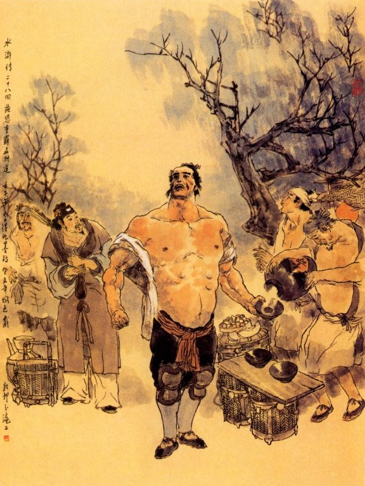
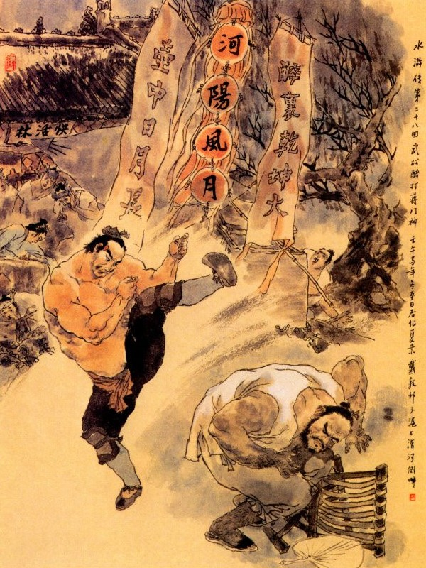

Khi đó Thi Ân bảo với Võ Tòng rằng:
- Xin Huynh trưởng hãy ngồi chơi, việc này để tiểu đệ kể rõ ràng đầu đuôi thì mới rõ được.
Võ Tòng có ý nóng nảy mà rằng:
- tiểu Quản Doanh bất tất phải lôi thôi dài dòng văn tự. có thế nào xin cứ nói thực ngay cho tôi được biết.
- Tiểu đệ từ thuở nhỏ theo đòi võ nghệ cũng biết được qua loa dăm ngón còn quyền, nhận thế đất Mạnh Châu thường gọi là Kim Nhãn Bưu. Ở gần cửa bên đông trại này có một nơi phố xá, tên là Khoái Hoạt Lâm, xưa nay các thương khách ở Sơn Đông Hà Bắc đến đó buôn bán rất đông. Trong phố có hơn trăm nhà khách sạn lớn và hai ba mươi sòng đánh bạc lớn. Trước đây tiểu đệ nhờ có đôi chút võ nghệ, bèn bắt tám chín mươi tên tên tù đồ khỏe mạnh ở trong trại, đem ra đó mở một ngôi tửu điếm; rồi bắt các khách sạn cùng các sòng bạc quanh đó, nếu khi có đám kỹ nữ nào qua lại là phải đem đến tửu điếm của tiểu đệ trước rồi mới được chia đi các nơi. Nhân thế mà tính mỗi tháng tất cả tiền vặt vãnh có thể kiếm tới hai ba trăm lạng bạc. Dè đâu có ông Trương Đoàn Huyện, người ở Đông Lộ Châu mới đến, lại dắt thêm anh chàng to lớn, tên là Tưởng Trung cũng đến ở đây. Anh chàng này mình dài chín thước, tay gậy tay quyền ít người đo kịp, bọn giang hồ vẫn gọi là Tưởng Môn Thần (thần giữ cửa họ Tưởng) xưa nay. Anh ta thường nói khoác là: Trong ba năm trời ở Thái Nhạc đánh nhau không hề có ai đối thủ, khắp trong thiên hạ chỉ một người như hắn mà thôi, nhân vậy hắn cướp lối kiếm ăn của tiểu đệ. Tiểu đệ đã khẳng khái không chịu nhường, sau bị hắn đánh một trận, có tới hơn hai tháng trời mới dậy được. Hôm nọ Huynh trưởng mới đến đây, chính tiểu đệ vẫn còn đau tay phải buộc đó. Tiểu đệ nghĩ đến chuyện ấy, thực là căm tức vô cùng toan đem người đến đánh báo thù một mẻ, song lại e hắn ta với Trương Hoành Huyện rất thân, lỡ có thế nào thì ở trong trại đây làm lắm điều không tiện, bởi thế mà chưa sao báo trả được xong. Nay nghe tiếng Huynh trưởng có lòng hạ cố giúp đỡ một tay, để tiểu đệ được sạch tan gánh giận vô cùng ấy thì dẫu chết cũng được hả lòng. Duy Huynh trưởng mới đến đây, e khi đường xá xa xôi, trong mình chưa khỏe, nên muốn đợi dăm ba tháng cho Huynh trưởng khỏe mạnh rồi sẽ nói ra, ai ngờ bây giờ.
Võ Tòng nghe đến đó, cười ha hả mà rằng:
- Anh Tưởng Môn Thần ấy, có mấy đầu mấy tay?
Thi Ân đáp:
- Hắn cũng một đầu hai tay thôi, chứ làm gì mà có nhiều hơn ai!
Võ Tòng cười mà rằng:
- Tôi tưởng hắn ta ba đầu sáu tay tài giỏi như Na Tra ngày trước thì tôi cũng sợ thực, nhưng nếu có một đầu hai tay, không được tài giỏi như Na Tra thì có làm chi mà sợ.
- Đành vậy, song tiểu đệ sức lực yếu kém, nên chỉ sợ không tài nào địch nổi hắn.
- Tôi đây không phải nói khoác, nhưng cứ võ nghệ của tôi thì bao nhiêu những thằng ngang ngạnh, không biết điều trong thiên hạ, đều không coi vào đâu cả. Bây giờ các bác cứ đem rượu đi đường để uống rồi tôi với bác cùng đến xem nó ở đâu, để tôi đánh cho một mẻ như con hổ hôm trước, nếu có chết, tôi xin đền mạng.
Thi Ân nói:
- Xin Huynh trưởng cứ ngồi chơi, lát nữa gia nghiêm tôi về đây, sẽ xin nói chuyện. Việc này không vội được, hãy để sáng mai tôi cho người đi dò xem, nếu nó còn ở nhà thì hôm sau ta đến đó, bằng không thì hãy thư thả rút giây sợ động rừng, lỡ bị nói đánh lại thì không phải chuyện chơi.
Võ Tòng ra dáng sấn sổ mà rằng:
- tiểu Quản Doanh phải biết rằng, nếu để nó đánh được thì ta không phải là thằng con trai. Đi thì đi ngay, cần gì phải đợi hôm nay hôm khác, tiểu Quản Doanh cho mau mau mới được.
Đương khi hăm hở nói cười thì bỗng thấy lão Quản Doanh ở sau bình phong chạy ra nói rằng:
- Nghĩa sĩ ơi, lão há nghe chuyện nghĩa sĩ đã lâu rồi. Nay thằng cháu được gặp ngài thật là vén mây trông thấy mặt trời. Xin mời ngài hãy vào trong nhà, ta nói chuyện.
Võ Tòng đứng dậy, theo lão Quản Doanh vào nhà trong. lão Quản Doanh mời Võ Tòng ngồi, Võ Tòng khiêm tốn mà rằng:
- Tôi là một người phạm tội đến đây, đâu dám xấc xược như vậy.
Lão Quản Doanh cười rằng:
- Nghĩa sĩ không nên câu nệ như thế, cháu được gặp nghĩa sĩ là may rồi.
Võ Tòng nghe nói, liền xin phép ngồi đối diện với lão Quản Doanh, còn Thi Ân thì đứng ở một bên. Võ Tòng lại nói với lão Quản Doanh xin phép cho Thi Ân cùng ngồi để nói chuyện. Được một lát người nhà dọn rượu lên, lão Quản Doanh cất chén mời Võ Tòng mà rằng:
- Nghĩa sĩ là một bậc anh hùng như vậy, thiên hạ ai không đem lòng kính phục? Thằng cháu ở đây có mở ngôi hàng ở Khoái Hoạt Lâm, chủ ý cũng không phải bán buôn cầu lợi, đó chẳng qua là muốn nuôi thêm hào khí cho đất Mạnh Châu, để cùng non sông đóng góp. Ngờ đâu bị tên Tưởng Môn Thần ỷ thế hào cường mà công nhiên chiếm mất, nay nếu không gặp nghĩa sĩ thì có lẽ khó lòng mà báo thù được. Vậy nếu nghĩa sĩ có lòng thương đến thì cháu xin bốn lạy làm Huynh trưởng, để gọi tỏ tấm lòng thành cùng nghĩa sĩ.
Võ Tòng cung kính đáp rằng:
- Chúng tôi có tài học gì mà dám nhận lời như thế!
Nói xong cất chén rượu uống một hơi cạn hết. Thi Ân đứng dậy lạy Võ Tòng bốn lạy bái làm Huynh trưởng, kết nghĩa anh em, Võ Tòng vội đứng dậy đáp lễ rồi cùng ngồi uống rượu với nhau, đến khi Võ Tòng rất say rồi mới vực về phòng, để nghỉ.
Sáng hôm sau, cha con Thi Ân bàn với nhau rằng:
- Hôm qua Võ Đô Đầu uống rượu say quá, chắc hôm nay còn trúng tửu, chưa có thể làm việc được, vậy ta hãy nói dối là sai người đi dò xem, thấy hắn không có ở nhà, đành để hoãn đến mai sẽ liệu. Khi bàn định xong rồi Thi Ân liền đến bảo với Võ Tòng rằng:
- Tiểu đệ sai người đến dò xét hẳn hòi, song hắn còn đi vắng vậy để sáng mai xin mời Huynh trưởng đi cho.
Võ Tòng nghe nói, lại có ý sốt sắng mà rằng:
- Hôm nay lại nghỉ một ngày thì thực phiền cho tôi quá.
Khi cơm nước xong, Võ Tòng cùng Thi Ân đi ra trước trong dinh chơi mát một hồi rồi lại trở về phòng khách nói chuyện võ nghệ với nhau. Trưa hôm ấy, Thi Ân mời Võ Tòng ăn cơm ở trong nhà. Trong khi thiết rượu, chỉ mời dăm ba chén rồi cất đi mà đem cơm lên ngay. Võ Tòng đương cao hứng uống rượu, nhưng thấy vậy cũng không hiểu đầu đuôi tình ý ra làm sao? Khi cơm nước xong. Võ Tòng trở về phòng nghỉ, có hai tên đầy tớ đem nước tắm rửa đến. Võ Tòng liền hỏi rằng:
- Sáng hôm nay tiểu Quản Doanh thiết cơm, lại không để cho uống rượu là tình ý làm sao?
Tên đầy tớ đáp rằng:
- Chẳng giấu gì Đô Đầu; lão Quản Doanh cùng tiểu Quản Doanh tôi đã định hôm nay là mời Đô Đầu hành sự, song lại e hôm qua Đô Đầu uống nhiều rượu thì hôm nay chắc trúng tửu mà lỡ mất việc to bởi vậy nên không dám đem rượu ra mời Đô Đầu mà cốt dưỡng sức khỏe để mai nhờ Đô Đầu giúp việc cho.
Võ Tòng nghe nói bật cười mà rằng:
- Như thế mà sợ ta say rượu, lỡ mất việc to thì cũng lạ thực!
Đêm hôm ấy Võ Tòng nóng lòng sốt ruột mong sao cho chóng sáng để dậy mà đi. Sáng hôm sau chàng trở dậy sớm rửa mặt súc miệng, đội khăn mỏ xéo, mặc áo vải mùi thâm, thắt lưng đỏ, chân quấn lá đáp đi đôi giày gia rồi lấy miếng lá cao dán đè chỗ kim ấn trên mặt. Vừa khi chỉnh đốn xong thì Thi Ân đã đến mời Võ Tòng vào trong nhà ăn cơm.
Khi cơm nước xong, Thi Ân liền sai đầy tớ đóng ngựa để đi, Võ Tòng gạt đi mà rằng:
- Chân tôi có việc gì mà phải đi ngựa, cái đó không cần. Duy có một điều này, tiểu Quản Doanh phải nghe tôi mới được.
Thi Ân nói:
- Có điều gì xin Huynh trưởng cứ cho biết, nào tiểu đệ dám không theo.
- Bây giờ tôi với tiểu Quản Doanh cùng đi, cần phải nhớ một câu là "Không ba chẳng qua vọng".
- Thế nào là "Không ba chẳng qua vọng", tiểu đệ không hiểu ý ra sao cả?
Võ Tòng cười mà rằng:
- Tôi nói cho chú nghe; Nếu chú có cần cho tôi đánh Tưởng Môn Thần thì cứ bước chân ra khỏi thành, hễ gặp hàng rượu nào là phải mời tôi uống ba chén rượu; nếu không có ba chén rượu thì tôi không đi qua vọng tử nữa, thế là không ba chẳng qua vọng.
Thi Ân nghe nói, nghĩ một lát mà đáp rằng:
- Khoái Hoạt Lâm cách đông môn mười bốn mười lăm dặm đường, trong quãng đó có tới mười hai mười ba hàng rượu, nếu qua mỗi hàng mà uống ba chén thì tất cả, phải đến ba nhăm ba sáu chén rượu, như thế e khi Huynh trưởng quá say thì còn làm việc thế nào được?
Võ Tòng cả cười mà rằng:
- tiểu Quản Doanh sợ tôi say rồi kém sức hay sao? Phải biết rằng, tôi uống một phần rượu thì tài giỏi một phần chứ uống đến mười phần rượu thì tài sức lại ở đâu đâu kéo đến, không biết thế nào mà kể? Nếu không phải là say rượu to gan thì nào có đánh được con đại trùng ở trên núi Cảnh Dương. Lúc đó cứ để cho tôi say mê say mệt thì sức mới mạnh được.
Thi Ân nói:
- Nếu vậy thì càng hay lắm. Hôm qua chỉ sợ Huynh trưởng quá say lỡ việc, nên không dám đem rượu ra mời. Nay Huynh trưởng đã nói như vậy thì nhà tôi sẵn có rượu ngon, xin cho người cứ gánh sắn cả hoa quả rượu chè đi rồi đến đó sẽ dùng.
- Thế thì vừa ý tôi lắm! Có dăm ba chén rượu mới có khí lực, chứ đánh suông thì khó lòng đánh được. Hôm nay tôi đánh thằng ấy, gọi là để cho họ buồn cười một mẻ vỡ bụng mà chơi.
Bấy giờ Thi Ân sai hai tên người nhà gánh rượu nhắm đi trước rồi lão Quản Doanh lại chọn vài ba mươi tên khỏe để ứng tiếp theo sau, đoạn rồi Thi Ân cùng Võ Tòng ra đi. Ra khỏi trại Bình An tới cửa Đông Môn đi được bốn năm mươi bước thì thấy bên cạnh đường có một ngôi hàng rượu phất tử phỏ phất ở trên, hai tên người nhà đã gánh rượu đến trực đó. Thi Ân liền mời Võ Tòng vào ngồi rồi đem bày các thức rượu nhắm ra.
Võ Tòng bảo với Thi Ân rằng:
- Cái này tất phải dùng ba chén lớn, chứ chén nhỏ thì không ăn thua. Người nhà nghe nói, liền lấy ra ba cái chén thực lớn rồi Thi Ân rót rượu ra mời. Võ Tòng không cần khiêm nhượng mời chào, cất chén uống ba hơi hết cả rồi đứng phắt dậy ngay. Người nhà lại thu xếp đồ đạc mà gánh mau đi trước.
Võ Tòng cười bảo Thi Ân rằng:
- Ba chén rượu thực là nở ruột gan dễ chịu lắm, thôi ta đi đi!

Nói đoạn hai người cùng ra đi. Bấy giờ đương dạo tháng bảy, trời còn nắng bức gió tây, hai người liền cởi phanh cả áo ra mà đi cho mát. Đi được độ một dặm đường nữa, lại đến một nơi tửu điếm thấp thoáng, lá cờ bay ở trong giữa rừng cây. Thi Ân đứng dừng lại hỏi Võ Tòng rằng:
- Chỗ này là một hàng rượu nhà quê, Huynh trưởng cũng tính là một vọng chăng?
Võ Tòng đáp:
- Phải lắm, uống ba chén rồi sẽ đi.
Nói đoạn hai người lại vào hàng ngồi rồi người nhà đem rượu vào rót ba chén để Võ Tòng uống. Uống xong lại đứng dậy cùng đi. Từ đó cứ mỗi khi gặp hàng rượu, lại vào uống ba chén rồi đi. Dần dần đi qua có tới mươi chốn hàng rượu, Thi Ân thấy Võ Tòng vẫn chưa có dáng say thì lại càng lấy làm vui trong dạ. Bấy giờ Võ Tòng hỏi Thi Ân rằng:
- Từ đây đến Khoái Hoạt Lâm, ước chừng còn bao nhiêu nữa.
Thi Ân đáp:
- Không còn bao lâu nữa, ở ngay khu rừng trước mặt kia rồi.
- Nếu vậy thì tiểu Quản Doanh nên tránh một nơi khác mà đợi tôi, để một mình tôi tìm đến hắn cũng được.
- Vâng, Huynh trưởng dạy thế thì phải lắm, song cần nên cẩn thận dụng tâm, chớ có khinh địch mới được.
Võ Tòng cười rằng:
- Cái đó không cần phải dặn, cứ cho bọn người nhà nó đưa tôi đi, còn gặp hàng rượu nào thì tôi phải uống nữa.
Thi Ân liền dặn người nhà đi theo Võ Tòng, còn tự mình thì đi lánh một nơi.
Võ Tòng đi qua ba bốn dặm đường lại uống thêm mười chén rượu nữa. Lúc đó vào khoảng sắp trưa, khi trời nóng bức, thỉnh thoảng mới hây hây hơi có chút gió. Võ Tòng nghe chừng hơi rượu bốc lên cũng có dăm bảy phần chếch choáng. Chàng liền cởi phăng áo vải làm bộ say mười phần rồi ngả bên đông vẹo bên tây mà khệnh khạng đi vào trong rừng. Lũ người nhà trỏ vào đằng trước mặt mà nói rằng:
- Đến con đường chữ Thập kia, tức tửu điếm của Tưởng Môn Thần rồi đó.
Võ Tòng nói:
- Gần đến đây rồi thì các ngươi nên lánh cho xa, để khi nào ta đánh ngã hắn rồi sẽ đến.
Nói đoạn đi thốc vào trong rừng, thấy một anh đại hán như tượng Kim Cương, khoác cái áo vải trắng, tay cầm cái phất xua ruồi, bắc ghế ngồi ở gốc cây hòe hóng mát. Võ Tòng càng giả mặt say, liếc mắt nhìn qua một lượt rồi trong bụng nghĩ thấm: "Anh chàng này tất là Tưởng Môn Thần hẳn?” Chàng nghĩ vậy lại sồng sọc đi vào. Đi được dăm ba mươi bước đã đến quãng đường chữ Thập, có một tửu điếm rất lớn, trước cửa treo là cờ viết bốn chữ "Hà Dương Phong Nguyệt" rất to. Khi đến tận cửa thấy một dãy chắn song sơn đầu, hai bên treo hai cái biển vàng viết hai câu: "Rượu Thánh vung trời, đất; Bầu Tiên tít tháng ngày". Trong đó một bên kê đặt giường thịt dao thớt và các thức đồ dùng, còn một bên thì lò bếp và các đồ làm bánh. Phía trong có ba cái chum đựng rượu rất lớn, chôn ngập một nửa xuống đất. Khoảng giữa mặt một cái quầy, cười ó một người đàn bà trẻ tuổi ngồi trong. Người ấy là vợ lẽ Tưởng Môn Thần mới lấy, nguyên là một tay con hát khi xưa. Bấy giờ Võ Tòng chạy thẳng vào hàng, đến bên quầy ngồi đối diện với người đàn bà rồi đặt hai bàn tay lên quầy mà nhìn chị chàng kia không chớp mắt. Người đàn bà thấy vậy, thỉnh thoảng mặt nom đi chỗ khác. Võ Tòng lại nom vào trong, thấy có năm bảy tên tửu bảo ở đó, chàng bèn gõ bàn gọi lên rằng:
- Nào chủ hàng rượu ở đâu?
Vừa gọi xong thì có một tên tửu bảo chạy đến, nhìn Võ Tòng rồi hỏi rằng:
- Ngài muốn lấy bao nhiêu rượu?
Võ Tòng nói:
- Lấy hai vò, nhưng hãy đem đây ta nếm xem đã.
Tên tửu bảo chạy đến bên quầy bảo người đàn bà, lấy hai vò rượu đổ vào thùng rồi đem lên một chén đưa cho Võ Tòng uống mà bảo rằng:
- Rượu đây xin ngài nếm cho.
Võ Tòng cất lấy chén rượu xem qua một lượt, lắc đầu mà nói rằng:
- Không tốt, không tốt, lấy thứ khác đây.
Tên tửu bảo biết ý Võ Tòng, đã ra dáng say, bèn cầm đến quầy bảo người đàn bà rằng:
- Nương tử đổi cho hắn thứ khác vậy.
Người đàn bà liền cất rượu ấy đi rồi đổi lấy thứ rượu thực tốt đưa ra, tửu bảo lại hâm nóng một chén đưa ra cho Võ Tòng nếm.
Võ Tòng sẽ nhấp một tý rồi lại kêu lên rằng:
- Rượu này cũng không ngon? Muốn sống thì đổi thứ khác đây.
Tên tửu bảo cố nín hơi không nói rồi đem đến cho người đàn bà mà nói rằng:
- Nương tử dầu lòng đổi thứ khác vậy, lão này nghe chừng say rồi, chỉ muốn sinh sự thôi, ta đừng chấp họ mới được.
Người đàn bà nghe nói đổi lấy một thứ rượu thượng hạng đưa cho tửu bảo. Tên tửu bảo hâm nóng tử tế rồi rót một chén đưa cho Võ Tòng. Võ Tòng cất lên rồi nói rằng:
- Ừ! Cái rượu này còn hơi có mùi mẽ một chút. Này thằng kia, chủ nhân nhà mày họ gì?
Tên tửu bảo đáp rằng:
- Chủ nhân tôi họ Tưởng.
Võ Tòng liền nói:
- Sao lại họ Lý?
Chị đàn bà nghe vậy lấy làm khó chịu, liền nói với tên tửu bảo rằng:
- Thằng chó này lại muốn chết chăng?
Tên tửu bảo nói:
- Nghe chừng anh ta ở đâu mới đến đất này, chưa biết thế nào, nên mới liều lĩnh như thế!
Võ Tòng liền hỏi rằng:
- Các người nói chuyện gì đấy?
Tên tửu bảo đáp rằng:
- Chúng tôi nói chuyện riêng đằng này ngài cứ xơi rượu đi.
Võ Tòng tiếp luôn rằng:
- Ngươi bảo người đàn bà ấy ra đây uống rượu với ta một lúc.
Tên tửu bảo gạt đi rằng:
- Chết nỗi! Sao nói càn thế? Bà ấy là vợ ông chủ nhà tôi đấy.
- Vợ ông nữa thì làm sao? Uống rượu với ta phỏng đã việc gì?
Chị chàng kia nghe nói cả giận mắng lên rằng:
- Đồ chết toi này hỗn thực. Nói xong toan đẩy cái quầy để chạy ra. Võ Tòng vội cởi phăng cái áo bên trên ra thắt ngang xuống bụng, cầm thùng rượu hắt một cái đổ tóe ra đất rồi nhảy vào trong quầy. Vừa khi chị chàng kia mới đứng dậy toan đi ra, bỗng bị Võ Tòng sấn đến một tay nắm đầu tóc, một tay cầm chặt lấy thắt lưng rồi xách qua mặt quầy mà ném ngay vào trong chum rượu. Khi đó có một tên tửu bảo nhanh chân chạy đến toan đánh Võ Tòng, bất đồ bị Võ Tòng nắm xách cổ lên mà bỏ ngay vào chum rượu; rồi lại có một tên tửu bảo nữa chạy đến cũng bị tóm lấy ném ngay vào chum rượu nốt. Ba người đều giãy lục đục ở trong chum rượu mà không anh nào nhảy ra được. Sau có hai tên tửu bảo nữa ở trong nhà chạy xông ra cũng bị Võ Tòng đánh cho mỗi tên một cái đá ngã ệp xuống mà không dậy được. Đoạn rồi Võ Tòng xông vào đánh tất cả mọi người nhà bếp anh nào anh ấy, đều thục thân mà chạy cho mau để báo với Tưởng Môn Thần. Tưởng Môn Thần nghe báo tin thì ngạc nhiên cả kinh, liền đẩy ngã ghế ra, phất một cái đuôi ruồi xuống đất rồi vội vàng chạy đến hàng xem. Vừa đến khoảng đường rộng ở trước cửa thì gặp Võ Tòng cũng ra đến đó. Tưởng Môn Thần tuy có sức lớn hơn người, song ít lâu nay tửu sắc ham mê, sức lực cũng có phần hao kém, bởi thế mà thoạt khi trông thấy Võ Tòng thì trong bụng đã hơi hơi núng, Tuy vậy song chàng vẫn khinh thị Võ Tòng còn đương say rượu, nên cứ thị hùng mà sấn vào để đánh. Khi xông vào tới nơi thì Võ Tòng giơ tay quyền lên, nhằm giữa mặt Tưởng Môn Thần đánh dứ một cái rồi quay ngoắt mà chạy ngay. Tưởng Môn Thần cả giận, xông vào đến đuổi, bất đồ bị Võ Tòng mau chân đá phi một cái trúng ngay vào giữa bụng. Tưởng Môn Thần giơ tay lên đỡ rồi phi quyền để đánh lại, Võ Tòng né mình tránh tay quyền của Tưởng Môn Thần rồi lại giơ chân bên hữu đá phi một cái nữa, trúng ngay vào thái dương Tưởng Môn Thần. Tưởng Môn Thần bị cái đá ngã lộn về đằng sau, Võ Tòng liền xông vào đạp chân lên bụng, giở quả đấm ra đánh luôn. Nguyên trước Võ Tòng đánh nhử một cái rồi quay ngoắt mình đi mà phi chân trái đá trúng một bên rồi lại phi chân phải đá luôn bên nữa. Phép đánh đó gọi là "Ngọc Hoàn Bộ Uyên Ương Cước" là một ngón võ nghệ biệt tài của Võ Tòng thao luyện xưa nay, không phải những tay tầm thường ví được. Bấy giờ Võ Tòng đánh luôn năm bảy cái đấm, Tưởng Môn Thần không sao bò ngóc dậy được, chịu nằm ép dưới đất mà kêu van xin tha. Võ Tòng nghe vậy dừng tay đánh mà bảo với Tưởng Môn Thần rằng:
- Nếu ngươi muốn ta tha thì phải nghe ba việc này mới được.

Tưởng Môn Thần kêu lên rằng:
- Hảo hán tha cho tôi, dẫu đến trăm việc tôi cũng xin theo, huống chi là ba việc.
Võ Tòng bèn lấy chân dậm lên trên bụng Tưởng Môn Thần mà nói ra ba việc cho nghe. Mới hay là:
Giang hồ say tỉnh tỉnh say,
Ngang trời dọc đất thân này xem không,
Bấy lâu xuôi ngược bềnh bồng,
Biết nhau chăng có non sông với mình,
Tuồng gì là giống hôi tanh,
Thế gian thêm để bất bình riêng ai,
Trăm năm cõi tục còn dài,
Nam nhi xin chớ phụ lời bồng tang!
Lời bàn của Thánh Thán
Xét đến viết Sử, việc của quốc gia mà người cầm bút, việc của văn sĩ, chép việc quốc gia, phải đâu chỉ theo lối tự sự có sao nói thế mà thôi, còn ngòi bút phả vẫy vùng ngang dọc làm sao cho tỏ những ý nghĩa uống ẩm của từng chuyện người trong Sử, như thế mới gọi là kỳ văn! Như Sử Ký Tư Mã Thiên đã soạn, Tư Mã Thiên chép chuyện Bá Di thì đâu phải chỉ ở Bá Di, chép chuyện du thủ du thực thì phải đâu ở du thủ thực; Đến như chép chuyện của Hán Võ, chỉ là chuyện của Hán Võ mà chẳng phải chí như chí của Hán Võ. Có ghét gì những chí ấy, như kiểu tuyên truyền hay chê bai chỉ là văn chương mà thôi vậy. Mã Thiên chép ra là văn của Mã Thiên, Mã Thiên trong bút chép ra để mà tự sự thì có tài liệu của văn Mã Thiên, vì chép ra những việc lớn của đời, như triều nghị nghiêm trang, lễ nhạc long trọng, chiến trận ngu cấp, tế lễ thận trọng, mưu kế phiền toái, hình ngục khiếp thương. Phải cung tài liệu cho kỳ văn tuyệt thế mà quân tướng chẳng đến hỏi đến, vì rằng làm ra mọi là quyền quân tướng, chẳng phải thư sinh được dự bàn mà chép ra sử sách, là quyền văn sĩ, dù quân tướng ngôi cao mà đâu có thể cấm đoán! Có gì đâu quân tướng có thể làm ra những việc dở thay, nhưng không thể làm ra những việc ấy còn mãi với đời, có thể làm cho việc của quân tướng được mãi với đời, cho đến trăm ngàn muôn đời, hãy còn ca ngợi kính yêu thì phải nhờ đến công của kỳ văn tuyệt bát mà việc của quân tướng, khác nào vuốt theo đuôi ngựa mà thấy rõ ra.
Thế cho nên Mã Thiên làm văn, ta thấy rằng việc to thô quá thì thu vén lại, thấy rằng việc nhỏ nhen quá thì phô phang ra. Hoặc thấy rằng việc còn thiếu sót thì phụ thêm vào, trái lại việc đầy đủ thừa ra thì bỏ bớt đi, đó là kể vì văn, đâu phải kế vì việc, nếu khiến văn của ta trở nên một kỳ văn tuyệt thế thì ta phải truyền cho việc, nên muốn chỉ truyền lại công việc, lại khiến cho đầy đủ không mất đi thì ta làm văn phải thế nào, đã trở nên kỳ văn tuyệt thế, nếu không đem văn chương của chúng ta ra truyền thì làm sao mà truyền nổi chuyện hãy còn mãi mãi? Đức Khổng Tử chả nói rằng: Câu chuyện thì của Tề Hoàn, Tấn Văn, còn về văn chương thì của Sử Ký; câu chuyện là của Tề Hoàn, Tấn văn, thành ra chỉ là chép việc chứ không là văn, còn văn chương thì của Sử Ký, lại hóa ra chỉ có văn mà không phải việc, còn văn là của văn chương thì câu chuyện cũng khỏi chép đến Tề, Tấn, nên thuyết về Văn Liệu, Khổng Tử cũng nói qua đến vậy.
Hỡi ôi! Bậc quân tử từ xưa, nhận mạng vua cầm bút, vì chép chuyện một đời, moi móc gấm thêu châu ngọc tự trong lòng, trở nên tuyệt thế kỳ văn, há có một nhà văn nào mà không chép hết ra mọi chuyện, chẳng qua muốn thành tuyệt thế kỳ văn, để tự vui sướng mà phải Trương đúng là Trương, Lý đúng là Lý, không một chút cong ngay ngang dọc tô điểm tô mầu, với cái chí kinh doanh thảm đạm vậy! Thì đọc Sử Tỳ Quan mà lại quái đến Tống Tử Kinh, cho rằng đặt để nên lời, chẳng đọc sách Tàn Đường hay sao? Hồi này tả Võ Tòng, vì Thi Ân đánh Tưởng Môn Thần chép việc đấy, Võ Tòng uống rượu, lại thêm văn đấy, đánh Tưởng Môn Thần là liệu vậy, uống rượu là moi gấm thêu châu ngọc ở trong lòng, vì có rượu phải có người đại hán đánh hổ trên núi Cảnh Dương là tay uống rượu đệ nhất của muôn thủa; Có rượu phải có chỗ, ra khỏi cửa đông Mạch Châu, đến rừng Khoái Hoạt phải mười bốn mười lăm dặm đường, lại là nơi uống rượu đệ nhất của muôn thủa; Uống rượu lại có lúc, trời hè nóng bức, hiu hắt gió Tây, cởi áo ngoài ra đón gió, lại là lúc đáng uống rượu vào đệ nhất của muôn thủa; Uống rượu phải ra lệnh uống: không ba chẳng qua Vọng, lại là lệnh uống rượu đệ nhất của muôn thủa; Uống rượu còn có Giám Sát, uống luôn là ba chén phải đi ngay, lại là giám sát uống rượu đệ nhất của muôn thủa; Uống rượu phải có đếm, cứ mười hai mười ba nhà là một vọng tử, lại là tửu trù đệ nhất của muôn thủa; Uống rượu lại có người kèm theo, gần đến chỗ Vọng, đã sửa soạn ra ba chén trước, uống xong gấp gấp chạy đi, lại là người kèm rượu đệ nhất của muôn thủa; Uống rượu lại có món đưa cay, chợt nghĩ đến vong huynh mà phóng thanh khóc rống, chợt đâu căm lũ gian dâm mà vỗ bàn kêu lên, lại là món đưa cay rượu đệ nhất của muôn thủa; Uống rượu phải nhớ, nhớ đến Tống Công Minh ở trang Sài Tiến Vương Tôn, lại là uống rượu nhớ đệ nhất của muôn đời; Uống rượu có thói say, chờ Tưởng Môn Thần không được ở đường đất Mạnh Châu lại là thói uống say đệ nhất của muôn thủa; Uống rượu có tán thưởng, bốn chữ Hà Dương Phong Nguyệt, hai câu Rượu Thánh vung trời, đất; Bầu Tiên tít tháng ngày, lại là thưởng rượu đệ nhất của muôn thủa; Uống rượu có đề tài là Khoái Hoạt Lâm (Rừng sống thú), lại là tửu đề đệ nhất của muôn thủa. Bao nhiêu thứ đó, đều do văn của hồi này, đâu phải việc của hồi này, nếu là việc của hồi này mà thôi ấy thì Thi Ân đem Võ Tòng đi đánh Tưởng Môn Thần, một đường uống hết ba mươi nhăm, ba mươi sáu chén rượu chỉ y theo lệ Tống Tử Kinh, chép qua một lượt là đủ, việc gì phải phiền đến Thi Nại Am soạn ra văn một hồi này. Ngán thay! Đời không kẻ đọc nổi chuyện thì ta còn biết làm sao?